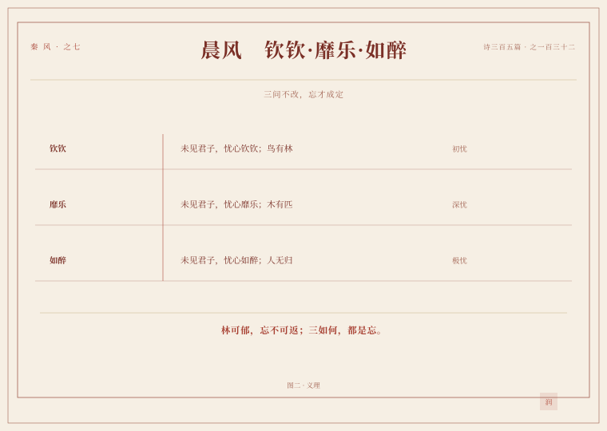

第一百三十二篇 晨风
秦风 · 之七 SJ132
朗读 · 普通话
依经文原文朗读，章次不读出；配古琴底乐，不改速、不加拖腔。全库同一音色（豆包 TTS），非播音员录制。
一 解题
诗三判：
- 谁在说：思君子之人。晨风疾飞入北林，山隰之木各有其匹，唯君子不来，故三问「如何」。
- 说什么事：三章只换「钦钦／靡乐／如醉」与山隰二木。鸟有林，木有匹，人独无；三问不改，是忘之深。
- 为何编在此：承《黄鸟》之痛，转康公之弃贤；秦风由盛而衰，先从「忘」字起。
《毛序》：“《晨风》，刺康公也。忘穆公之业，始弃其贤臣焉。”
朱子《诗集传》（大意）：兴也。晨风，鹯；郁，盛；钦钦，忧貌；苞，丛生；六驳，兽名；棣，棠棣；树檖，山梨；如醉，忧之深。
本库的看法：《晨风》是一首把「忘」写成「三问」的诗。
鸟归林，木有偶，人独不见；物皆有托，唯君子无归。
三问「如何如何」，不是问路，是问心。断语：林可郁，忘不可返；三如何，都是忘。
先辨五事：「晨风」是鹯鸟，不是晨风；「郁」是茂盛，不是忧郁；「钦钦」是忧貌，不是钦佩；「六驳」是兽名，不是六匹马；「树檖」是山梨，不是树名泛称。
二 经文
第一章
鴥彼晨风，郁彼北林。
未见君子，忧心钦钦。
如何如何，忘我实多。
第二章
山有苞栎，隰有六驳。
未见君子，忧心靡乐。
如何如何，忘我实多。
第三章
山有苞棣，隰有树檖。
未见君子，忧心如醉。
如何如何，忘我实多。
分章：三章，章六句。
三 韵读
- 一章：林、钦，侵部。收声沉，忧先压住。
- 二章：栎、驳、乐，药铎部。入声短，忧中转硬。
- 三章：棣、檖、醉，物脂部。三章收「醉」，忧到不能醒。
读法：二章以昔形今，韵随叹转；昔愈厚，今愈薄。
四 字义与名物
- 晨风：鹯鸟。鴥：疾飞。郁：茂盛。北林：北面林。
- 钦钦：忧貌。如何：奈何。忘我实多：忘我甚多。
- 苞栎：丛生栎。六驳：兽名，一说似马。苞棣：丛生棠棣。树檖：山梨。
- 靡乐：不乐。如醉：如醉，忧深。
五 今译
晨风疾飞，北林茂盛。没见到君子，忧心钦钦。怎么办啊怎么办，忘我实在太多。
山有丛栎，隰有六驳。没见到君子，忧心不乐。怎么办啊怎么办，忘我实在太多。
山有丛棣，隰有山梨。没见到君子，忧心如醉。怎么办啊怎么办，忘我实在太多。
六 章旨
- 一章：写鸟归林。鸟有林，人无归；一「钦钦」，忧始。
- 二章：写木有匹。山隰各有所生，人独失所；一「靡乐」，忧深。
- 三章：写忧如醉。木尚有实，人竟见忘；一「如醉」，忧到不能醒。
- 总收：三章皆以物有托反衬人无托；三问不改，忘才成定。
七 诗教
- 兴：以晨风归林起兴；鸟归而人不归，是第一层反。
- 观：观「忘」不是一时，是三章重复；一重复，忘就成了习惯。
- 群：思者与被思者不成一对；山隰有匹，君臣无匹。
- 怨：怨在「忘我实多」；不骂，只数，数比骂重。
八 分寸与边界
- 不可把「晨风」当晨风。它是鹯鸟；一作风，兴象就散。
- 不可把「郁」读作忧郁。它是茂盛；一作郁，北林就成了愁林。
- 不可把「六驳」当六匹马。它是兽名；一作马，山隰对举就成车马。
- 不可把三问读作真问。它是反问；一作真问，忘就还有救。
- 不可把此诗只读作妇人思夫。毛序指弃贤；本库从毛序背景，不锁死。
九 存疑
- 诗旨：毛序刺康公弃贤；朱子以为妇人念君子。本库从毛序背景，兼存朱说。
- 「六驳」：毛传「兽名」；一说马名。从兽。
- 「树檖」：毛传「山梨也」。从山梨。
- 「忘我实多」：一说是「忘我之事多」；一说是「忘我甚」。从忘我甚。
- 世次：序称「忘穆公之业，始弃其贤臣」，具体所指何人何政，经传无征；存其世，不强系。
十 跨典
- 《诗经·秦风·黄鸟》（SJ131）：前篇伤殉，此篇伤弃；一死一弃，秦之衰。
- 《论语·微子》：“鸟兽不可与同群。”——鸟兽尚有群；此诗反用，鸟有林而人无归。
- 《诗经·小雅·伐木》：“嘤其鸣矣，求其友声。”——鸟鸣求类，兴贤人归；与晨风归林同例。
- 《尔雅·释鸟》：“晨风，鹯也。”——鸟名训诂本此；非晨之风。
十一 双卡与图
六对：
| 晨风（鹯） |
晨风（晨风） |
| 郁（茂盛） |
郁（忧郁） |
| 钦钦（忧貌） |
钦钦（钦佩） |
| 六驳（兽） |
六驳（六马） |
| 树檖（山梨） |
树檖（树名） |
| 如何（反问） |
如何（真问） |
图一 · 晨风 鹯飞北林、苞栎、六驳

图二 · 晨风 钦钦、靡乐、如醉
读图三处：
- 鹯：图一鸟侧身，长翼、短喙、尾一束，飞向北林；鸟有林，不画人。
- 木兽：图一左山苞栎，右隰六驳，兽只画背、四足、尾；山隰各有所生。
- 三问：图二「钦钦／靡乐／如醉」三列，末列朱线收「忘我实多」；问不改，忘才成定。
断语：林可郁，忘不可返；三如何，都是忘。